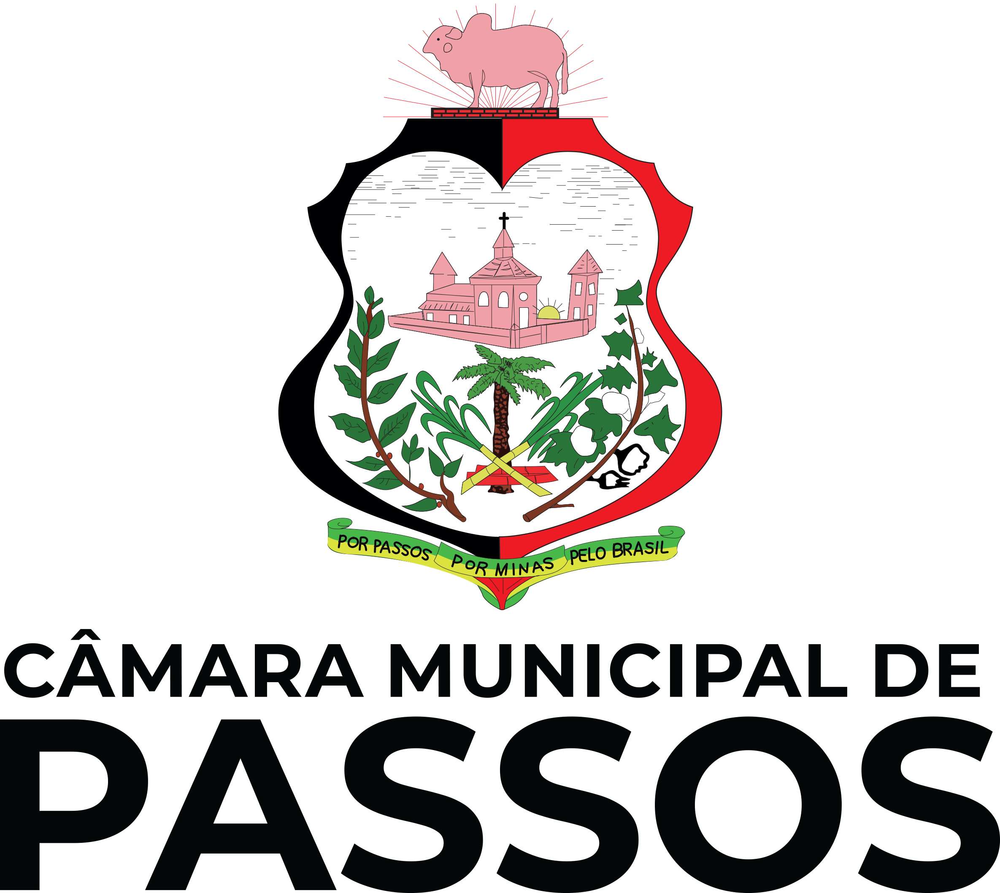
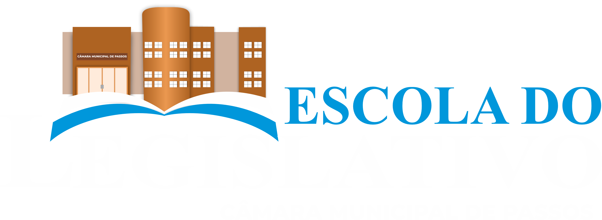

VERSÃO DE TESTES — NÃO UTILIZAR PARA APURAÇÃO OFICIAL. Perguntas demonstrativas, sem login ou sincronização entre dispositivos. Dados gravados somente neste navegador. O banco oficial e os gabaritos não estão neste arquivo público.
Classificatória
Aguardando escola
Rodada 1
Aguardando sorteio da pergunta...
Cronômetro demonstrativo — tempo sujeito à aprovação
00:20
Inicie a contagem após a leitura da pergunta e das alternativas.
Selecione a escola e sorteie uma pergunta.
Painel do operador
O auxílio distribui metade dos pontos para cada dupla se houver acerto. É permitido apenas nas rodadas 1 a 4, e uma dupla pode prestar auxílio uma vez por rodada. As dúvidas de interpretação do regulamento serão submetidas à organização.
A lista de finalistas é uma projeção: duas melhores de cada chave. Empates na vaga devem ser decididos pela organização antes da homologação. Na final, a pontuação começa em zero.


Realização: Câmara Municipal de Passos • Escola do Legislativo — 2026